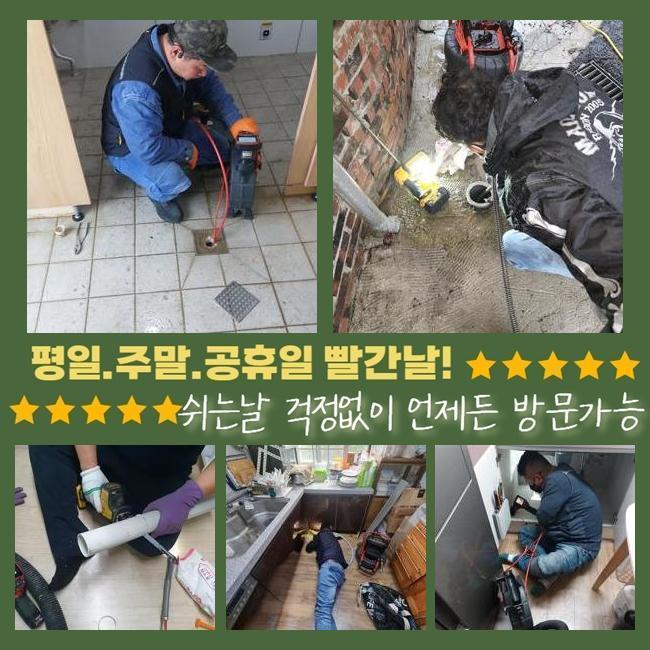
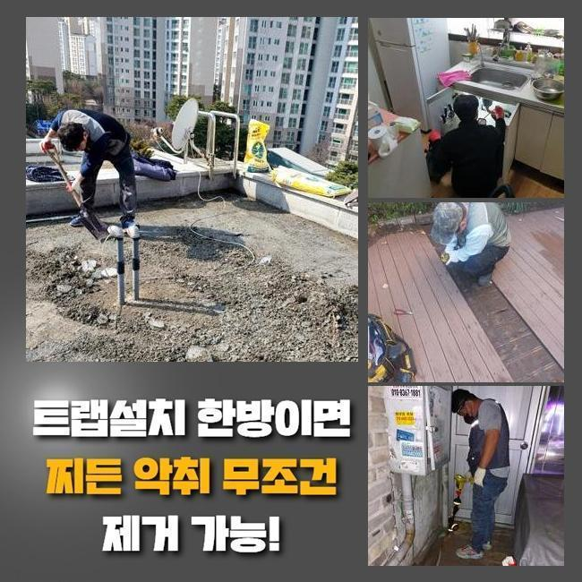
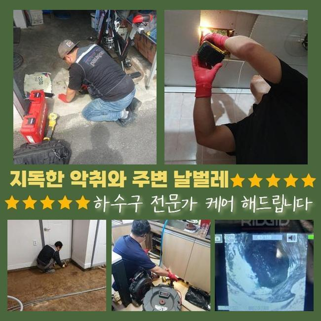
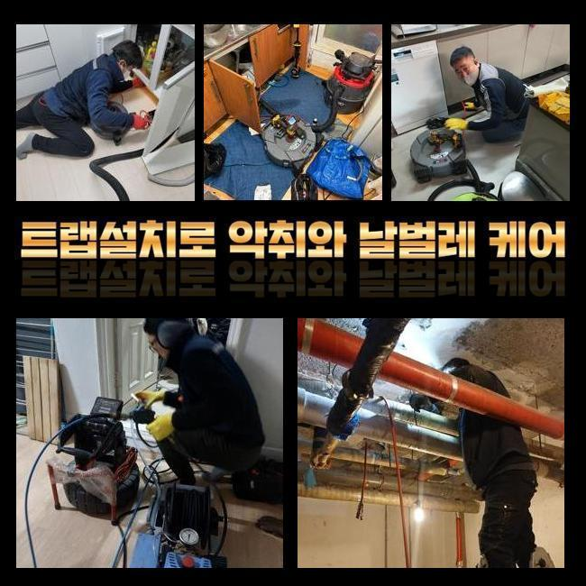
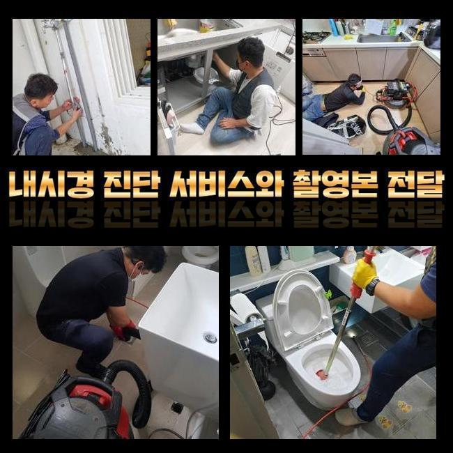
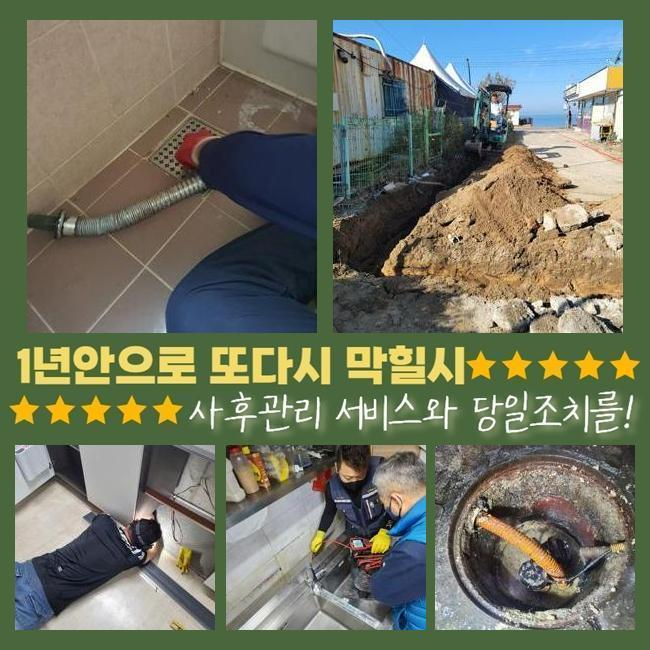
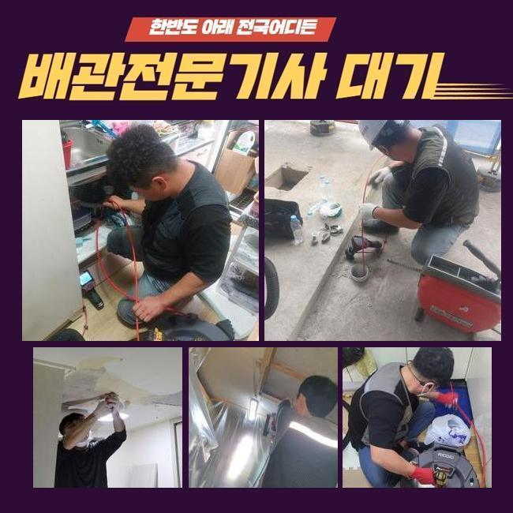

🏠 청원구 변기막힘 배관세관 하수구카메라 싱크대수전교체
용인 싱크대막힘 전문 시공 후기

📋 작업 개요
- 위치: 용인
- 서비스 유형: 싱크대막힘, 변기막힘, 하수구막힘, 배관막힘, 집수정막힘, 역류해결, 뚫는업체, 배관청소, 고압세척, 설비공사, 배관보수, 악취차단
- 작업 일시: 2024. 11. 17. 20:55
- 업체명: 하수구수사대 (010-5615-2118)
🔍 문제 상황
청원구 변기막힘 배관세관 하수구카메라 싱크대수전교체
집의 하수구가 마비된다면 다수가 느끼는 불편감은 말로는 다할 수 없을 정도죠
원활하게 작동하던 하수구가 불시에 비정상적으로 변하고 동시에 역류 현상이 막힘과 함께 나타나기도 해요
사태가 터져버리기 전에 예방차원으로 하수관을 치워주는 팁도 있으니 앞으로 남길 내용을 유념하셔서 계신 공간 안도 셀프 테스트를 한 번 해보세요
집안의 하수구 통수 장애를 최대한 빨리 보수해 주십사하는 의뢰를 듣고 얼른 작업지로 이동하게 됐는데요
물의 정상적인 폐기가 불능에 빠지면 잔수가 역으로 솟구치면서 별의 별 종류의 이물질들이 바닥에 올라오고 극심한 하수구 냄새도 무시못하게 방출됩니다
더럽게 만드는 요소들로 인해 스트레스가 이만저만이 아니시던 의뢰인분이 절박한 마음으로 전문케어를 받아보시기로 결심한거죠
하수관 불통이 일어나면 시중의 클리너들을 통하여 개통을 해보려고 합니다
오래되지 않은 신규 막힘이면 온수를 붓는다거나 소비자도 쉽게 쓸 수 있는 하수구를 관통하는 기구나 액상을 부어서 원활한 물의 흐름을 조성합니다
비지땀을 흘리면서 하수관을 셀프로 뚫어봐도 대개는 재차 문제가 생겨서 노력의 가치를 잃고 맙니다
대응법을 잘 모르신다면 에너지를 비축해 두시고 대신 가까이에서 대기하는 전문공을 모색해서 풀어나가시는 것을 여러분께 추천드리겠습니다!

🔎 원인 분석
💡 전문가 진단: 정밀 진단 장비를 사용하여 슬러지의 고착 여부를 판명하고 타격/세척 작업을 실시했습니다.
작업지 도착 이후에 보니 물이 뿜어져나오는 모습도 오감으로 체감할 수 있었습니다
오래 묵은 물이 나오면 냄새도 무시할 수 없고 공기를 탁하게 만드니 빠른 해결을 시도하시는 게 좋아요
지난 경험을 말씀해주셨는데 건물 전체의 하수구 세척을 진행했음에도 이런 문제점들이 연달아 빚어졌다고 해요
현재 같은 건물에 있는 많은 세대 내부에서 똑같이 물을 못쓴다면 건물 자체의 메인관로에 어딘가 문제가 생겨버린 가능성도 염두에 두어야 합니다
특정 호실에서 정비를 해줘도 임시방편에 불과하니 전체적인 메인 관로의 검토를 해야만 해결됩니다
월례행사처럼 정기점검 일자를 계획해서 사전에 정상적으로 운영되고 있는지 관심있게 봐줘야 합니다
하수처리가 안되는 현황을 원만히 풀기 위해서 가져간 내시경 장치를 간략한 상황파악을 해줬습니다
옥외 관로로 이어지는 파이프라인의 외관이 이상하다는 것을 눈치채고는 더 자세히 알기 위해 메인관을 열어봐야겠다고 결심이 내려졌어요
뚜껑을 조심히 들어내자 상당량의 오물이 누적되어 있었고 입구부터 차단된지라 폐수가 달성되지 못했다는 사연을 추정해볼 수 있었습니다
깊숙한 곳에서 막힘이 생기면 기술이 없는 상황에서 홀로 처리하려는 도전은 그리 경과가 좋지 못할 것입니다
이처럼 복잡다단한 문제기에 애초에 전문업체에 의뢰하는 게 모두의 안녕을 위해서 바람직하다고 할 수 있겠죠

🔧 작업 과정
핵심 배관 내에 고인 오염물질이 제거되게 하려고 석션 기기를 정상가동시켜서 우선적으로 걸리는 오염원 빨아당기는 작업을 해줬습니다
이 기구의 힘으로 내측에 고인 잔해들을 모조리 수습해야 합니다
기기 설명을 해드리자면 일반적인 청소기와 유사한 기능을 하기 때문에 파워가 상당합니다
해당 기계의 운용으로 머무른 장애물들을 모두 거둬들여야만 머지않은 미래에 또다시 하수시스템이 통으로 마비되는 사안들을 보지 않을 수 있어요
물에 떠다니는 찌꺼기을 제거하고 새롭게 분석하고자 배관 카메라 기구를 투여해서 이곳저곳을 살펴보는 시간을 가졌어요
대량 확산된 오물덩어리가 사라진 점을 체크했으며 경로가 회복된 사실 마저 인식할 수 있었어요
저희 석션기로 사이즈 큰 것들은 없앴지만 미처 처리가 되지 못한 자잘한 이물질 입자들을 싹 다 청산하려면 강력한 압력의 물로 씻는 절차를 시행해야 하는데요
탁월한 효율을 내는 방식으로 센 수압을 발사해서 관로 표면에 달라붙은 기름지고 오래된 묵은 때를 맑게 정리하는 업무입니다
좁은 배관에다 실시하기는 과도할 수 있지만 메인관로에 쓰면 상당히 시간을 줄여주는 특화된 장비로 애용하고 있습니다
연식도 중요한데 두툼하고 넓은 집수정과 메인관 실내의 좁은 배관들까지 노화가 일어났기에 깨지고 파괴되는 일이 없게끔 적절한 세기로 조절해가면서 내부 세척과정을 밟아나갔습니다
끝날 때 까지 고압세척을 반복시공하면서 오물들을 몸체로부터 분리시켰습니다
시공을 한참 하다가 카메라로 다시 마무리를 지을 지 체크했더니 방해물이 없어져서 산뜻해진 모양새가 명확히 보여서 작업 마감을 알리게 되었습니다
부담을 덜어드리고자 범위를 줄여주는 게 좋으니까 여러 해결책들을 끝없이 구상하고 궁리합니다
하수구가 연결된 형태라거나 옵션에 따라서 해결 전략이 달라질 수 있는 부분인데 고압세척을 잘 모른채 이용하면 배관에 무리가 갈 수 있어 전체 부품을 변경하면 수리비가 더욱 막대하게 커집니다
애초에 오랜 경력을 자랑하는 업체를 선정하시는 것을 추천드려요
하수관 시스템은 꽤 난해한 매커니즘인데다 노후화로 인한 이슈를 가지고 있는 곳이라서 높은 숙련도를 갖춘 사람만이 유연하게 대처가 가능합니다
특정한 배관 하나의 청소를 마무리했다고 하여 전체 배수관로의 성능이 새것처럼 바뀌지도 않고 재발도 빈번하게 생성되고 맙니다


✅ 작업 완료
어설픈 업체가 공사를 하게 되어버리면 배관의 클리닝을 분명 했는데 똑같은 사태가 촉발돼서 다른 곳을 불러야하는 귀찮은 일이 생기며 시간뿐 아니라 비용까지 막대해집니다
사태가 터져버리기 전에 방해 요소를 제거하는 대안도 있기 때문에 지금부터 소개할게요
손세척을 실시하거나 하수구 전용 세제를 이용하거나 커다란 물건을 막는 필터를 사용하는 것도 큰 도움이 됩니다
펄펄 끓는 물을 배관 내로 내려보내거나 필터망을 설치하는 것도 좋은 방법이지만 이와 같은 예방 수단들을 공들여서 실천했음에도 하수구 이슈가 연속된다면 전문가의 손길이 필요하답니다
배관이나 하수구 문제로 고민이 상당히 깊으신 고객님들은 시간 상관없이 연락주시면 망설임이나 제약 없이 문제를 처리해 드리겠습니다!




⚠️ 주방 싱크대 배관 막힘 예방 수칙
- ✅ 기름기가 묻은 식기나 프라이팬은 설거지 전 키친타올로 반드시 기름때를 닦아내세요.
- ✅ 주기적으로 싱크대 개수대에 뜨거운 물을 가득 받아 한 번에 내려 배관 내부 기름을 씻어내세요.
- ✅ 배수구 거름망을 미세한 필터로 사용하시고 음식물 찌꺼기가 틈으로 새어 들지 않게 관리하세요.
- ✅ 베이킹소다와 식초를 뜨거운 물과 함께 일주일에 한 번씩 부어주면 배관 살균과 막힘 예방에 좋습니다.
💡 핵심 정리
- 확실한 장비 작업(내시경 점검 및 샤프트 스케일링)으로 원인을 뿌리 뽑습니다.
- 작업 후 1년 이내에 동일한 부위 재발 시 100% 무상 A/S 서비스를 보장합니다.
- 서울 · 경기 · 인천 전 지역에 24시간 언제든 긴급 출동할 수 있도록 항시 대기 중입니다.
❓ 자주 묻는 질문 (FAQ)
🚨 용인 싱크대막힘 문제로 고민이신가요?
정확한 원인 진단과 확실한 시공으로 재발 없는 해결을 약속드립니다.
24시간 긴급 출동 | 서울 · 경기 · 인천 전지역 | 1년 내 재발 시 무상 A/S